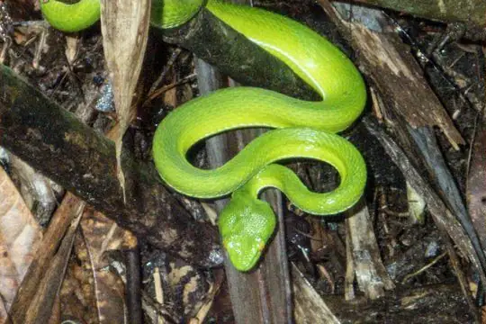
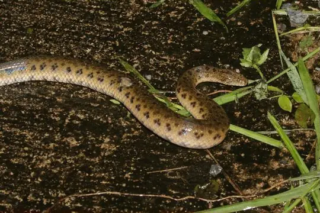
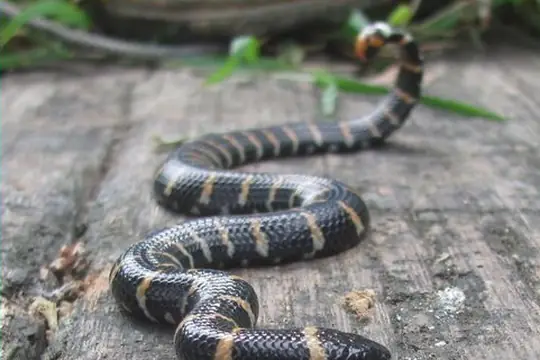
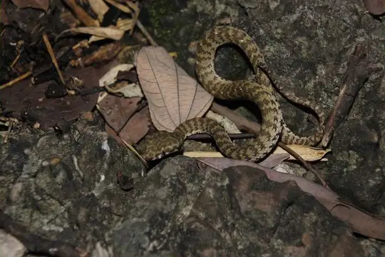
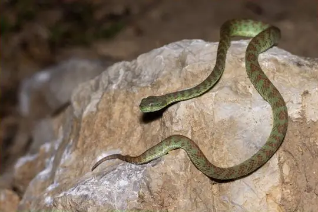
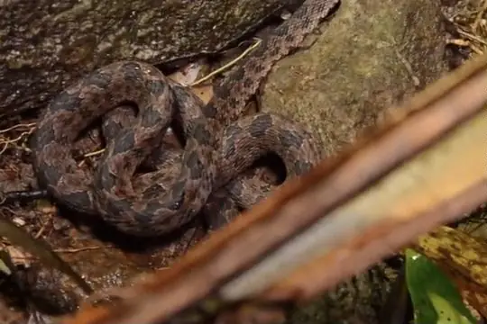
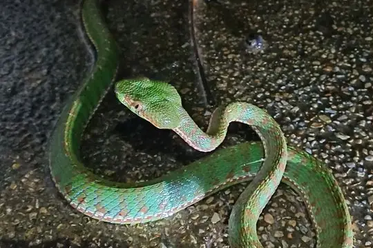

Snakes of Thailand
217 snake species are recorded in Thailand in SnakeList: 85 venomous and 132 non-venomous, from 14 families.
- 217species
- 85venomous
- 132non-venomous
- 14families
Species
Showing 217 species
 Annam Kukri SnakeOligodon annamensis
Annam Kukri SnakeOligodon annamensis Annulated Sea SnakeHydrophis cyanocinctus
Annulated Sea SnakeHydrophis cyanocinctus- No photo yetAnomalous Sea SnakeHydrophis anomalus
 Arabian Gulf Sea SnakeHydrophis lapemoides
Arabian Gulf Sea SnakeHydrophis lapemoides Ashy Kukri SnakeOligodon cinereus
Ashy Kukri SnakeOligodon cinereus Asian Vine SnakeAhaetulla prasina
Asian Vine SnakeAhaetulla prasina Assam Kukri SnakeOligodon catenatus
Assam Kukri SnakeOligodon catenatus Assam Mountain SnakePlagiopholis nuchalis
Assam Mountain SnakePlagiopholis nuchalis Bamboo PitviperTrimeresurus erythrurus
Bamboo PitviperTrimeresurus erythrurus Banded Cat SnakeBoiga saengsomi
Banded Cat SnakeBoiga saengsomi Banded KraitBungarus fasciatus
Banded KraitBungarus fasciatus Banded Wolf SnakeLycodon fasciatus
Banded Wolf SnakeLycodon fasciatus- No photo yetBangkok Mud SnakeEnhydris jagorii
 Barred Kukri SnakeOligodon signatus
Barred Kukri SnakeOligodon signatus Barron's Kukri SnakeOligodon barroni
Barron's Kukri SnakeOligodon barroni- No photo yetBelcher's Sea SnakeHydrophis belcheri
- No photo yetBighead Sea SnakeHydrophis annandalei
 Black-banded Sea SnakeHydrophis nigrocinctus
Black-banded Sea SnakeHydrophis nigrocinctus Black-headed Cat SnakeBoiga nigriceps
Black-headed Cat SnakeBoiga nigriceps Black-headed seasnakeHydrophis atriceps
Black-headed seasnakeHydrophis atriceps Blakeway's Mountain SnakePlagiopholis blakewayi
Blakeway's Mountain SnakePlagiopholis blakewayi Blanford's Bridal SnakeLycodon davisonii
Blanford's Bridal SnakeLycodon davisonii Blood PythonPython brongersmai
Blood PythonPython brongersmai Blood Python (curtus)Python curtus
Blood Python (curtus)Python curtus Blue Coral SnakeCalliophis bivirgatus
Blue Coral SnakeCalliophis bivirgatus Blue KraitBungarus candidus
Blue KraitBungarus candidus Blue-eyed Bush Rat SnakeGonyosoma coeruleum
Blue-eyed Bush Rat SnakeGonyosoma coeruleum Blue-necked KeelbackRhabdophis rhodomelas
Blue-necked KeelbackRhabdophis rhodomelas Blunthead Slug SnakeAplopeltura boa
Blunthead Slug SnakeAplopeltura boa Bocourt's Mud SnakeSubsessor bocourti
Bocourt's Mud SnakeSubsessor bocourti Boie's Many-Tooth SnakeSibynophis geminatus
Boie's Many-Tooth SnakeSibynophis geminatus Boie's Mud SnakeHypsiscopus plumbea
Boie's Mud SnakeHypsiscopus plumbea Boonsong's KeelbackIsanophis boonsongi
Boonsong's KeelbackIsanophis boonsongi Boulenger's KeelbackHebius boulengeri
Boulenger's KeelbackHebius boulengeri Brook's Sea SnakeHydrophis brookii
Brook's Sea SnakeHydrophis brookii Brown Spotted PitviperProtobothrops mucrosquamatus
Brown Spotted PitviperProtobothrops mucrosquamatus- No photo yetBrown Stream SnakeParatapinophis praemaxillaris
 Brown Wolf SnakeLycodon effraenis
Brown Wolf SnakeLycodon effraenis Brown-spotted Pit ViperTrimeresurus venustus
Brown-spotted Pit ViperTrimeresurus venustus Buff Striped KeelbackAmphiesma stolatum
Buff Striped KeelbackAmphiesma stolatum Burmese BronzebackDendrelaphis subocularis
Burmese BronzebackDendrelaphis subocularis Burmese PythonPython bivittatus
Burmese PythonPython bivittatus Butler's Wolf SnakeLycodon butleri
Butler's Wolf SnakeLycodon butleri Cantor's Kukri SnakeOligodon cyclurus
Cantor's Kukri SnakeOligodon cyclurus Cantor's water snakeCantoria violacea
Cantor's water snakeCantoria violacea
Cardamom Mountains Green PitviperTrimeresurus cardamomensis Cardamom Mountains Wolf SnakeLycodon cardamomensis
Cardamom Mountains Wolf SnakeLycodon cardamomensis Cave RacerElaphe taeniura
Cave RacerElaphe taeniura
Chanard's Mud SnakeEnhydris chanardi- No photo yetCheckered KeelbackXenochrophis piscator
 Chequered KeelbackFowlea piscator
Chequered KeelbackFowlea piscator Chinese Keelback Water SnakeTrimerodytes percarinatus
Chinese Keelback Water SnakeTrimerodytes percarinatus Chinese Mountain Pit ViperOvophis monticola
Chinese Mountain Pit ViperOvophis monticola Clouded Pit ViperTrimeresurus nebularis
Clouded Pit ViperTrimeresurus nebularis Collared Reed Snake (pavimentata)Calamaria pavimentata
Collared Reed Snake (pavimentata)Calamaria pavimentata Common Bamboo ViperCraspedocephalus gramineus
Common Bamboo ViperCraspedocephalus gramineus Common Many-tooth SnakeSibynophis collaris
Common Many-tooth SnakeSibynophis collaris Common Mock ViperPsammodynastes pulverulentus
Common Mock ViperPsammodynastes pulverulentus Common RingneckGongylosoma scriptum
Common RingneckGongylosoma scriptum Common sea kraitLaticauda laticaudata
Common sea kraitLaticauda laticaudata Common SeasnakeHydrophis schistosus
Common SeasnakeHydrophis schistosus Common Wolf Snake (capucinus)Lycodon capucinus
Common Wolf Snake (capucinus)Lycodon capucinus Deuve's Kukri SnakeOligodon deuvei
Deuve's Kukri SnakeOligodon deuvei Deuve's Water SnakeHomalopsis nigroventralis
Deuve's Water SnakeHomalopsis nigroventralis Diard's BlindsnakeArgyrophis diardii
Diard's BlindsnakeArgyrophis diardii Dog-faced Water SnakeCerberus rynchops
Dog-faced Water SnakeCerberus rynchops Dog-toothed Cat SnakeBoiga cynodon
Dog-toothed Cat SnakeBoiga cynodon Dragon snakeXenodermus javanicus
Dragon snakeXenodermus javanicus- No photo yetDurand's Mountain Stream SnakeOpisthotropis durandi
 Dusky Wolf SnakeLycodon albofuscus
Dusky Wolf SnakeLycodon albofuscus Dwarf SeasnakeHydrophis caerulescens
Dwarf SeasnakeHydrophis caerulescens Eastern Russel's ViperDaboia siamensis
Eastern Russel's ViperDaboia siamensis Elegant BronzebackDendrelaphis formosus
Elegant BronzebackDendrelaphis formosus Equatorial Spitting CobraNaja sumatrana
Equatorial Spitting CobraNaja sumatrana- No photo yetEstuarine Sea SnakeHydrophis obscurus
 False Striped Kukri SnakeOligodon pseudotaeniatus
False Striped Kukri SnakeOligodon pseudotaeniatus Fasciolated Kukri SnakeOligodon fasciolatus
Fasciolated Kukri SnakeOligodon fasciolatus Fire-back KeelbackHebius igneus
Fire-back KeelbackHebius igneus- No photo yetFlower's Worm SnakeGerrhopilus floweri
 Gerard's water snakeGerarda prevostiana
Gerard's water snakeGerarda prevostiana Gibson's wolf snakeLycodon gibsonae
Gibson's wolf snakeLycodon gibsonae Gold-ringed Cat Snake (dendrophila)Boiga dendrophila
Gold-ringed Cat Snake (dendrophila)Boiga dendrophila Gold-ringed Cat Snake (melanota)Boiga melanota
Gold-ringed Cat Snake (melanota)Boiga melanota Gray Bronzeback (caudolineatus)Dendrelaphis caudolineatus
Gray Bronzeback (caudolineatus)Dendrelaphis caudolineatus Gray Cat SnakeBoiga siamensis
Gray Cat SnakeBoiga siamensis Gray's Kukri SnakeOligodon dorsalis
Gray's Kukri SnakeOligodon dorsalis Green Cat SnakeBoiga cyanea
Green Cat SnakeBoiga cyanea Green KeelbackRhabdophis nigrocinctus
Green KeelbackRhabdophis nigrocinctus Green Rat Snake (nigromarginata)Ptyas nigromarginata
Green Rat Snake (nigromarginata)Ptyas nigromarginata Green Vine Snake (nasuta)Ahaetulla nasuta
Green Vine Snake (nasuta)Ahaetulla nasuta Groundwater's KeelbackHebius groundwateri
Groundwater's KeelbackHebius groundwateri Gumprecht's Pit ViperTrimeresurus gumprechti
Gumprecht's Pit ViperTrimeresurus gumprechti Guo's Green Pit ViperTrimeresurus guoi
Guo's Green Pit ViperTrimeresurus guoi- No photo yetGünther's sea snakeMicrocephalophis cantoris
 Haas's Bronzeback SnakeDendrelaphis haasi
Haas's Bronzeback SnakeDendrelaphis haasi- No photo yetHardwicke's Spine-bellied SeasnakeHydrophis hardwickii
 Hua Hin Kukri SnakeOligodon huahin
Hua Hin Kukri SnakeOligodon huahin Indian Rock PythonPython molurus
Indian Rock PythonPython molurus Indo-Chinese Rat SnakePtyas korros
Indo-Chinese Rat SnakePtyas korros Indo-Chinese Sand SnakePsammophis indochinensis
Indo-Chinese Sand SnakePsammophis indochinensis Indo-chinese Spitting CobraNaja siamensis
Indo-chinese Spitting CobraNaja siamensis Indonesian CobraNaja sputatrix
Indonesian CobraNaja sputatrix Indonesian Pit ViperTrimeresurus hageni
Indonesian Pit ViperTrimeresurus hageni Inornate Kukri SnakeOligodon inornatus
Inornate Kukri SnakeOligodon inornatus Jack's Water SnakeHomalopsis mereljcoxi
Jack's Water SnakeHomalopsis mereljcoxi Jasper Cat SnakeBoiga jaspidea
Jasper Cat SnakeBoiga jaspidea Javan File SnakeAcrochordus javanicus
Javan File SnakeAcrochordus javanicus- No photo yetJerdon's Sea SnakeHydrophis jerdonii
- No photo yetJintakune's Kukri SnakeOligodon jintakunei

Jodi's Pipe-SnakeCylindrophis jodiae Joynson's Kukri SnakeOligodon joynsoni
Joynson's Kukri SnakeOligodon joynsoni
Kanburi Pit ViperTrimeresurus kanburiensis Karenland KeelbackHebius terrakarenorum
Karenland KeelbackHebius terrakarenorum Keel-bellied Water SnakeBitia hydroides
Keel-bellied Water SnakeBitia hydroides Keeled Rat SnakePtyas carinata
Keeled Rat SnakePtyas carinata Kellog's Coral SnakeSinomicrurus kelloggi
Kellog's Coral SnakeSinomicrurus kelloggi Khasi KeelbackHebius khasiensis
Khasi KeelbackHebius khasiensis King CobraOphiophagus hannah
King CobraOphiophagus hannah- No photo yetKloss' Sea SnakeHydrophis klossi
 Koma's Formosa Slug SnakePareas komaii
Koma's Formosa Slug SnakePareas komaii Kopstein's Bronzeback SnakeDendrelaphis kopsteini
Kopstein's Bronzeback SnakeDendrelaphis kopsteini Kramer's Pit ViperTrimeresurus macrops
Kramer's Pit ViperTrimeresurus macrops
Kui Buri PitviperTrimeresurus kuiburi Kutkai KeelbackHebius bitaeniatus
Kutkai KeelbackHebius bitaeniatus Lambert's Sea SnakeHydrophis lamberti
Lambert's Sea SnakeHydrophis lamberti Laotian Wolf SnakeLycodon laoensis
Laotian Wolf SnakeLycodon laoensis Linne's Water SnakeHomalopsis buccata
Linne's Water SnakeHomalopsis buccata MacLelland's Coral SnakeSinomicrurus macclellandi
MacLelland's Coral SnakeSinomicrurus macclellandi Malayan Banded Wolf SnakeLycodon subcinctus
Malayan Banded Wolf SnakeLycodon subcinctus Malayan Brown SnakeXenelaphis hexagonotus
Malayan Brown SnakeXenelaphis hexagonotus Malayan Many-tooth SnakeSibynophis melanocephalus
Malayan Many-tooth SnakeSibynophis melanocephalus Malayan Mountain KeelbackHebius inas
Malayan Mountain KeelbackHebius inas- No photo yetMalayan Mountain Reed SnakeMacrocalamus lateralis
 Malayan Pit ViperCalloselasma rhodostoma
Malayan Pit ViperCalloselasma rhodostoma Malayan RingneckLiopeltis tricolor
Malayan RingneckLiopeltis tricolor Malayan WhipsnakeAhaetulla mycterizans
Malayan WhipsnakeAhaetulla mycterizans Many-spotted Cat SnakeBoiga multomaculata
Many-spotted Cat SnakeBoiga multomaculata Mekong Mud SnakeEnhydris subtaeniata
Mekong Mud SnakeEnhydris subtaeniata- No photo yetMolly Ozaki's Blind SnakeRamphotyphlops mollyozakiae
 Mouhot's Cambodian Kukri SnakeOligodon mouhoti
Mouhot's Cambodian Kukri SnakeOligodon mouhoti Mountain Slug SnakePareas margaritophorus
Mountain Slug SnakePareas margaritophorus Müller's Blind SnakeArgyrophis muelleri
Müller's Blind SnakeArgyrophis muelleri Nganson BronzebackDendrelaphis ngansonensis
Nganson BronzebackDendrelaphis ngansonensis Northern KeelbackHebius deschauenseei
Northern KeelbackHebius deschauenseei Northern Red-necked KeelbackRhabdophis helleri
Northern Red-necked KeelbackRhabdophis helleri Ocellated Kukri SnakeOligodon ocellatus
Ocellated Kukri SnakeOligodon ocellatus
Omkoi Lance-headed Pit ViperProtobothrops kelomohy Orange-lipped KeelbackRhabdophis flaviceps
Orange-lipped KeelbackRhabdophis flaviceps Oriental RatsnakePtyas mucosa
Oriental RatsnakePtyas mucosa Ornate Sea SnakeHydrophis ornatus
Ornate Sea SnakeHydrophis ornatus Palm vit viperCraspedocephalus wiroti
Palm vit viperCraspedocephalus wiroti Paradise Tree SnakeChrysopelea paradisi
Paradise Tree SnakeChrysopelea paradisi- No photo yetPeters' Sea SnakeHydrophis bituberculatus
 Pha-Ngan Kukri SnakeOligodon phangan
Pha-Ngan Kukri SnakeOligodon phangan Philippine CobraNaja philippinensis
Philippine CobraNaja philippinensis
Phuket PitviperTrimeresurus phuketensis- No photo yetPlain SeasnakeHydrophis inornatus
 Pope's Bamboo Pit ViperTrimeresurus popeiorum
Pope's Bamboo Pit ViperTrimeresurus popeiorum Radiated RatsnakeCoelognathus radiatus
Radiated RatsnakeCoelognathus radiatus Rainbow Mud SnakeEnhydris enhydris
Rainbow Mud SnakeEnhydris enhydris Red Bamboo SnakeOreocryptophis porphyraceus
Red Bamboo SnakeOreocryptophis porphyraceus Red River KraitBungarus slowinskii
Red River KraitBungarus slowinskii Red-bellied KeelbackRhabdophis conspicillatus
Red-bellied KeelbackRhabdophis conspicillatus Red-headed KraitBungarus flaviceps
Red-headed KraitBungarus flaviceps Red-tailed Pipe SnakeCylindrophis ruffus
Red-tailed Pipe SnakeCylindrophis ruffus Reticulated PythonMalayopython reticulatus
Reticulated PythonMalayopython reticulatus- No photo yetRobust SeasnakeHydrophis melanosoma
- No photo yetRoxane's Blind SnakeArgyrophis roxaneae
 Russell's ViperDaboia russelii
Russell's ViperDaboia russelii Sabah Pit ViperTrimeresurus sabahi
Sabah Pit ViperTrimeresurus sabahi Sai Yok Kukri SnakeOligodon saiyok
Sai Yok Kukri SnakeOligodon saiyok Sawtooth-necked BronzebackDendrelaphis nigroserratus
Sawtooth-necked BronzebackDendrelaphis nigroserratus Shore Pit ViperTrimeresurus purpureomaculatus
Shore Pit ViperTrimeresurus purpureomaculatus Short Sea SnakeHydrophis curtus
Short Sea SnakeHydrophis curtus Siamese Blind SnakeArgyrophis siamensis
Siamese Blind SnakeArgyrophis siamensis Smith's Mountain KeelbackOpisthotropis spenceri
Smith's Mountain KeelbackOpisthotropis spenceri Smooth Slug SnakeAsthenodipsas laevis
Smooth Slug SnakeAsthenodipsas laevis Snake-Eater Wolf SnakeLycodon ophiophagus
Snake-Eater Wolf SnakeLycodon ophiophagus Southeast Asian BockadamCerberus schneiderii
Southeast Asian BockadamCerberus schneiderii Speckled Coral Snake (maculiceps)Calliophis maculiceps
Speckled Coral Snake (maculiceps)Calliophis maculiceps Spiny-headed SeasnakeHydrophis peronii
Spiny-headed SeasnakeHydrophis peronii Spotted Coral SnakeCalliophis gracilis
Spotted Coral SnakeCalliophis gracilis Spotted Keelback Water SnakeFowlea punctulatus
Spotted Keelback Water SnakeFowlea punctulatus- No photo yetSpotted Mountain Stream SnakeOpisthotropis maculosa
 Spotted Slug SnakePareas macularius
Spotted Slug SnakePareas macularius Stoke's SeasnakeHydrophis stokesii
Stoke's SeasnakeHydrophis stokesii Striped Blind SnakeRamphotyphlops lineatus
Striped Blind SnakeRamphotyphlops lineatus Striped Coral Snake (intestinalis)Calliophis intestinalis
Striped Coral Snake (intestinalis)Calliophis intestinalis Striped Kukri SnakeOligodon taeniatus
Striped Kukri SnakeOligodon taeniatus Striped Sea SnakeHydrophis fasciatus
Striped Sea SnakeHydrophis fasciatus Sumatra Pit ViperTrimeresurus sumatranus
Sumatra Pit ViperTrimeresurus sumatranus Sunbeam SnakeXenopeltis unicolor
Sunbeam SnakeXenopeltis unicolor Surat Thani Kukri SnakeOligodon promsombuti
Surat Thani Kukri SnakeOligodon promsombuti Tentacled SnakeErpeton tentaculatum
Tentacled SnakeErpeton tentaculatum Theobald's Kukri SnakeOligodon theobaldi
Theobald's Kukri SnakeOligodon theobaldi- No photo yetTrang Worm SnakeArgyrophis trangensis
 Triangle Many-tooth SnakeSibynophis triangularis
Triangle Many-tooth SnakeSibynophis triangularis Twin-barred Tree SnakeChrysopelea pelias
Twin-barred Tree SnakeChrysopelea pelias Variable Reed SnakeCalamaria lumbricoidea
Variable Reed SnakeCalamaria lumbricoidea Viperine Sea SnakeHydrophis viperinus
Viperine Sea SnakeHydrophis viperinus Vogel's BronzebackDendrelaphis vogeli
Vogel's BronzebackDendrelaphis vogeli Vogel's Pit ViperTrimeresurus vogeli
Vogel's Pit ViperTrimeresurus vogeli Wall's BronzebackDendrelaphis cyanochloris
Wall's BronzebackDendrelaphis cyanochloris- No photo yetWest Coast Black-headed Sea SnakeHydrophis torquatus
 White-bellied Rat SnakePtyas fusca
White-bellied Rat SnakePtyas fusca White-headed Blind SnakeIndotyphlops albiceps
White-headed Blind SnakeIndotyphlops albiceps White-lipped PitviperTrimeresurus albolabris
White-lipped PitviperTrimeresurus albolabris- No photo yetWirot's Pit ViperTrimeresurus wiroti
 Yellow Sea SnakeHydrophis spiralis
Yellow Sea SnakeHydrophis spiralis Yellow striped SnakeCoelognathus flavolineatus
Yellow striped SnakeCoelognathus flavolineatus Yellow-bellied Sea SnakeHydrophis platurus
Yellow-bellied Sea SnakeHydrophis platurus Yellow-spotted Keelback Water SnakeFowlea flavipunctatus
Yellow-spotted Keelback Water SnakeFowlea flavipunctatus Yunnan Annulate KeelbackTrimerodytes yunnanensis
Yunnan Annulate KeelbackTrimerodytes yunnanensis Ziggy Stardust SnakeParafimbrios lao
Ziggy Stardust SnakeParafimbrios lao- No photo yetZoos Victoria's Wolf SnakeLycodon zoosvictoriae
- No photo yetAcrochordus dubius
 Pareas geminatus
Pareas geminatus
No snakes in Thailand match.
Thailand’s snakes in numbers
- Families: Colubridae 103, Elapidae 44, Viperidae 26, Homalopsidae 15, Typhlopidae 8, Pareidae 6, Pythonidae 5, Acrochordidae 2, Cylindrophiidae 2, Xenodermidae 2, Gerrhopilidae 1, Psammophiidae 1, Pseudaspididae 1, Xenopeltidae 1.
- 26 are recorded in no other country in SnakeList: Banded Cat Snake, Boonsong's Keelback, Brown Stream Snake, Chanard's Mud Snake, False Striped Kukri Snake, Flower's Worm Snake, Gibson's wolf snake, Groundwater's Keelback, Hua Hin Kukri Snake, Jintakune's Kukri Snake, Karenland Keelback, Kui Buri Pitviper and 14 more.